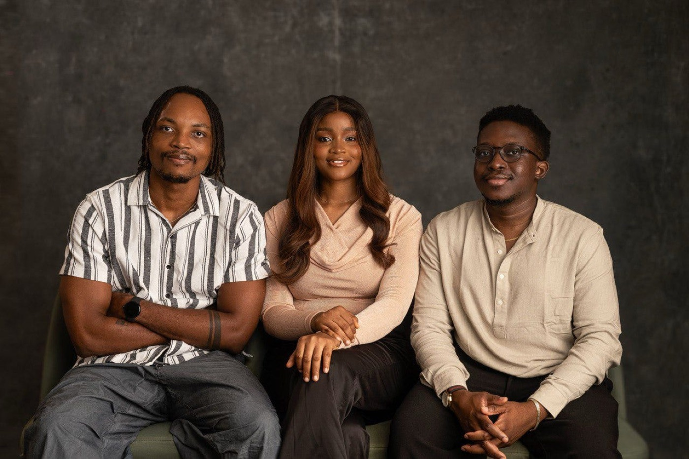
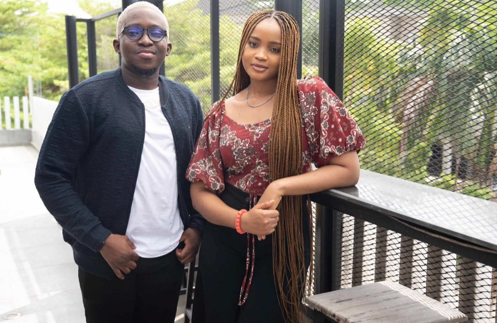

On picking a co-founder
I’ve heard a number of people describe picking a co-founder the same way you would pick a romantic partner.
I’m not going to lie, that always makes me cringe a little. I get what they’re trying to say, but yeah… I don’t know.
What I can speak to is my own experience building Accrue with Clinton and Zino. This is less of a “how to pick a co-founder” guide and more just me reflecting on what has worked for us. Of course, you can take what makes sense and apply it however you want.

1. Pick people you genuinely like
One thing that has really helped me in my co-founder relationship with Clinton and Zino is that they are people I genuinely like. Not in a “we’re co-founders so we have to get along” kind of way, but in a very real sense where, if we weren’t building together, they are still people I would choose to be around, people I would naturally like because of who they are at their core. They’re kind, thoughtful, and just genuinely good human beings.
I think this matters more than people admit, because a lot of the time when people are choosing a co-founder, they are mostly optimizing for skill. Is this person a good engineer, a good operator, a good business person? And yes, that is important, but I also think an equally important question is whether you actually like the person you’re about to build with.
The reason I say this is because building a company is hard. It usually starts out exciting, you have big ideas, you want to change things, you’re optimistic about how everything will play out, but over time, reality starts to set in. Things don’t move as fast as you expect, you’re not getting customers as quickly as you thought, money is not coming in when you hoped it would, and maybe fundraising is not working out the way you imagined.
In moments like that, if you’re working with someone who is just “skilled” but you don’t actually like them, it becomes very frustrating very quickly. But when you genuinely like the person, it becomes easier to go through those difficult moments together. The problems are still there, but there’s more patience, more understanding, and it’s just easier to keep going.
2. Pick people you share the same moral compass with
Another thing I’ve noticed in my experience with Clinton and Zino is that we share a similar moral compass, and I think it’s important to build with people who are aligned with you at that level.
This is not really about religion or background; it’s more about who the person is at their core and how they approach decisions. You can’t be trying to build something in an honest way, with integrity, while the person you’re building with is comfortable cutting corners here and there, because over time, that difference starts to create tension.
It may not show up immediately, but eventually, it will. You might find yourselves pulling in different directions, making decisions from completely different places, and that just makes things harder than they need to be.
So for me, it’s important to build with people where, at a foundational level, you’re aligned on how you want to do things, not just what you’re trying to build.

3. Pick people who can be kind during fights
Another thing that has helped is how we disagree, because the truth is, you will disagree a lot. You’re different people with different perspectives, so that part is completely normal.
We argue, and we argue often, but the thing that has helped is how those arguments happen. It’s not about avoiding disagreement; it’s about making sure that even in those moments, you’re not tearing each other down.
There’s no insulting each other, no talking down on each other, no saying things that are demeaning or disrespectful, because once you start doing that, it builds resentment, and that kind of damage is hard to undo. And I think that has made a big difference. It means that even after disagreements, there’s still respect, and you’re able to move forward.
I don’t think there’s a perfect way to choose a co-founder. You figure it out as you go, and you hope you’ve chosen people you can actually go through hard things with.
And yes, reading this back, I can already tell it’s starting to sound like that whole “it’s like picking a romantic partner” thing… which still makes me cringe.
But I guess the underlying point is the same. Who you choose to build with will shape everything.